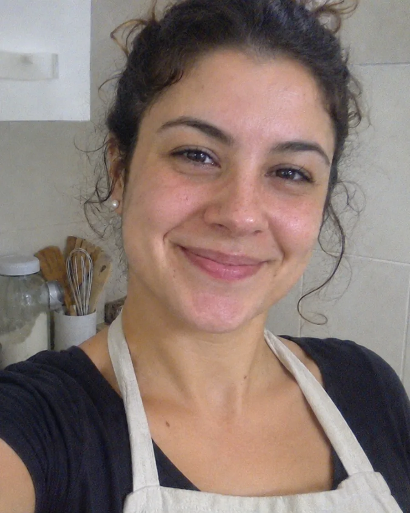

Brownie no Ponto
dose calculada pedaço por pedaço.
O método de ativação que faz você parar de queimar dinheiro com tutorial errado da internet. Você aprende o tempo e a temperatura exatos pra air fryer, forno e banho-maria, tira o gosto de grama da receita e acerta a dose de cada pedaço. Tudo com o que já tem na cozinha.
QUERO ACERTAR O PONTO AGORAAcesso imediato. Pagamento único. Garantia de 7 dias.
[PROVA REAL AQUI]
dose calculada pedaço por pedaço.
o clássico brasileiro, feito do jeito certo.
crocante por fora, sabor limpo por dentro.
café da manhã caprichado, sem gosto de planta.
a base que serve pra qualquer receita do guia.
técnica de confeitaria e sabor de verdade.
Jogar na manteiga quente e torcer não ativa nada. A planta só ativa numa faixa certa de temperatura. Abaixo dela, você comeu à toa. Acima dela, queimou, amargou e perdeu o material. Existe um ponto certo, e quase ninguém te ensina.
A air fryer não esquenta igual ao forno. O forno não trabalha igual ao banho-maria. Copiar a temperatura de um vídeo qualquer é queimar material na certa. O guia entrega o ponto exato de cada um.
Ninguém merece morder um brownie com gosto de grama queimada. Isso não é "normal", é erro de preparo. Tem técnica pra lavar a clorofila e deixar a receita com gosto de doce de confeitaria.
Um pedaço não faz nada, o outro derruba. Isso acontece quando a mistura não é calculada nem distribuída direito. Sem conta, sem controle.
O material é caro. Cada receita errada é dinheiro direto no lixo. O guia se paga na primeira receita que você acertar.
A verdade é que o problema nunca foi você. Foi o tutorial errado. Com o tempo, a temperatura e a conta certos, qualquer pessoa acerta de primeira.
Brownie com gosto de brownie. Cookie com gosto de cookie. A técnica de lavagem tira o amargo e deixa só o sabor da receita.
Você sabe quanto tem em cada porção antes de cortar. Sem pedaço fraco, sem pedaço que passa do ponto. Mesma experiência do primeiro ao último.
Tempo e temperatura certos significam extração máxima. Você aproveita o que comprou em vez de queimar metade na panela.
Air fryer, forno ou banho-maria. Sem máquina cara, sem equipamento de laboratório. Você usa a cozinha que já tem.
O guia mostra como ativar e infusionar de um jeito que não deixa a cozinha cheirando por horas. Você cozinha tranquilo e a casa continua com cheiro de casa.
O processo que ativa a planta do jeito certo, com o que você já tem em casa.
tempo e temperatura exatos por eletrodoméstico.
manteiga e óleo prontos pra qualquer receita.
lavagem da clorofila passo a passo.
a conta da porção antes de levar ao forno.
doces e lanches com técnica de confeitaria.
como começar baixo e ir com calma.
[PROVA REAL AQUI]
[PROVA REAL AQUI]
[PROVA REAL AQUI]
[PROVA REAL AQUI]
[PROVA REAL AQUI]
[PROVA REAL AQUI]
[PROVA REAL AQUI]
[PROVA REAL AQUI]
[PROVA REAL AQUI]
De [VALOR DO BÔNUS A CONFIRMAR] por R$0
Você coloca quanto material tem e quantas porções quer. A calculadora devolve a dose de cada pedaço. Acabou o chute, acabou o pedaço que passa do ponto.
De [VALOR DO BÔNUS A CONFIRMAR] por R$0
O guia de dose consciente: como começar baixo, quanto tempo esperar antes de repetir, como prever o resultado e o que fazer se passar do ponto. Você no controle, do primeiro pedaço ao último.
De [VALOR DO BÔNUS A CONFIRMAR] por R$0
Tempo e temperatura pra air fryer, forno e banho-maria, testados um por um. Cola na geladeira e acerta de primeira com o que já tem em casa.
Tudo isso sai DE GRAÇA adquirindo hoje.
O Guia Cozinha Verde (Vitalício)
[PREÇO BÁSICO A CONFIRMAR]
QUERO SÓ O GUIALeve o pacote completo de [PREÇO ÂNCORA A CONFIRMAR] por apenas:
[PREÇO A CONFIRMAR]
Oferta por tempo limitado
QUERO DOMINAR A TÉCNICA AGORA🔒 Compra Segura | ⚡ Acesso Imediato | ♾️ Acesso Vitalício | 🛡️ Garantia de 7 Dias

"Durante anos eu fiz bolo de festa em Denver. Aniversário, casamento, chá de bebê. Se tem uma coisa que confeiteira aprende, é que receita não aceita chute: um grau a mais no forno e o bolo vai pro lixo."
"Aí eu vi meu cunhado tentando fazer brownie com material comprado no dispensário. Jogou tudo na manteiga fervendo, queimou metade, o brownie saiu com gosto de grama e um pedaço não fazia nada enquanto o outro passava do ponto. Dinheiro no lixo, receita no lixo."
"Eu olhei aquilo com olho de confeiteira e pensei: isso é falta de ponto e falta de conta. Passei meses testando na cozinha de casa, com a air fryer, o forno e o banho-maria que qualquer um tem. Anotava tudo numa planilha: tempo, temperatura, quanto rendeu, como ficou o sabor. Errei muito pra você não precisar errar."
"Essa planilha virou o Guia Cozinha Verde."
"Minha missão é simples: fazer você acertar de primeira, com sabor de doce de confeitaria e a dose certa em cada pedaço. Chega de chute."
"Cozinhar com esse ingrediente não é chute. É ponto, tempo e conta."
Eu confio tanto nesse método que vou tirar o peso das suas costas. Você tem 7 dias completos pra testar o Guia Cozinha Verde.
Faça as receitas, siga a tabela, use a calculadora. Se achar que não valeu, ou se o resultado não for o que você esperava, eu devolvo 100% do seu dinheiro ([PREÇO A CONFIRMAR]). Sem perguntas, sem letras miúdas.
Na hora. Assim que o pagamento é aprovado, o acesso chega no seu e-mail. Você abre no celular, no tablet ou no computador e já pode ir pra cozinha.
Funciona. O guia tem o ponto certo separado pra air fryer, forno e banho-maria. Você usa o que tem.
Vai. O passo a passo foi escrito por uma confeiteira, não por um químico. É tempo, temperatura e conta, na ordem certa. Se você já fez um bolo de caixinha, consegue.
Não. O guia tem a técnica de lavagem da clorofila exatamente pra isso. O resultado tem gosto da receita, não da planta.
A Calculadora de Rendimento e Dosagem (Bônus 1) faz a conta pra você: quanto material, quantas porções, quanto vai em cada uma. E o Manual Redução de Danos (Bônus 2) mostra como começar com dose baixa e esperar o tempo certo.
O guia mostra como ativar e infusionar sem deixar a cozinha cheirando por horas.
Você tem 7 dias de garantia. Não gostou, pede o reembolso e recebe 100% de volta. O risco é todo meu.
Sim. Pagamento único, acesso pra sempre, incluindo as atualizações do guia.
Tudo o que você precisa pra acertar de primeira: GUIA COMPLETO + 3 BÔNUS
De [PREÇO ÂNCORA A CONFIRMAR] por [PREÇO A CONFIRMAR]
[PREÇO A CONFIRMAR] hoje, ou continuar queimando material a cada receita errada.
QUERO ACESSO TOTAL AGORA🔒 Compra Segura | ⚡ Acesso Imediato | 🛡️ Garantia de 7 Dias